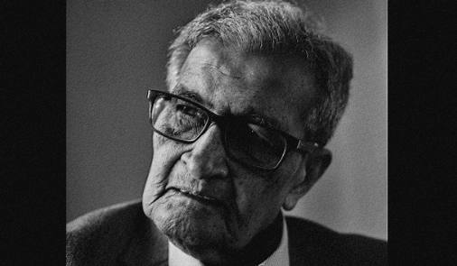
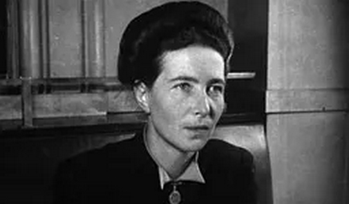
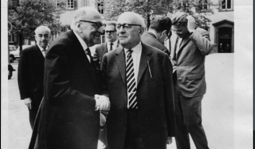
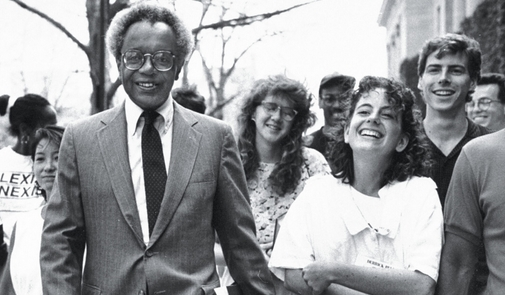
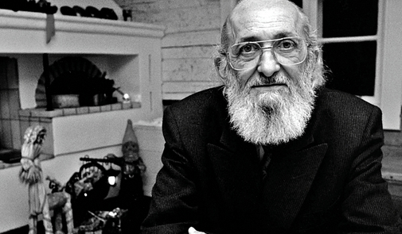
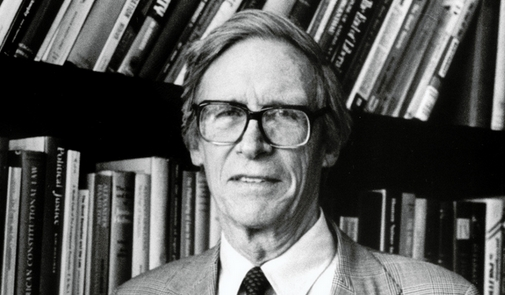
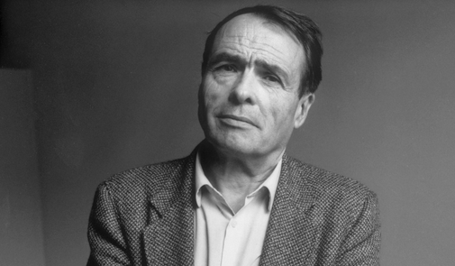

To join, send an initial email application with any one of the following:
1) A self-introduction
2) a resume/CV
3) a sample of work, portfolio, or assignment you are most proud of
Apply today by emailing one of the above to arx.collective [at] gmail.com.
All applicants will be invited for interview, with successful applicants
leading branch and regional leadership positions.

Researcher Highlight:Amartya Sen
One of the most influential figures in United Nations development initiatives, with a Nobel Prize in Economics in 1998. Sen's Capability Approach has reshaped development economics, lending a revived lens to business, international policies, and governance.

Researcher Highlight:Iris Marion Young
Professor of Political Science at the University of Chicago, well known for advancing the social justice issues faced by marginalized women and racial minorities. Her groundbreaking work in democracy and oppression continues to influence scholars beyond political science.

Researcher Highlight:Adorno & Horkheimer
Key leaders of the Frankfurt School, with an international legacy in both European and American research on policy - particularly the role of communications and media. The Frankfurt School of thought remains one of the most well known branches of critical academic theories worldwide.

Researcher Highlight:Derrick Bell
American lawyer and first African American professor to be tenured at Harvard Law School in history. Derrick Bell Jr. pioneered Critical Race Theory, highlighting systemic racism's persistence in law and society via key mechanisms such as interest convergence.

Researcher Highlight:Paulo Freire
As one of the most cited researchers in human history, Freire revolutionized universities and schools around the globe with his concept of critical pedagogy. His ideas have also profoundly influenced the fields of sociology and political science, inspiring research for social justice and empowerment through education.

Researcher Highlight:John Rawls
Receiver of the National Humanities Medal, and credited with starting the scholarly discipline of social justice. Rawlsian theories like the veil of ignorance continue to influence modern research on law, economics, political science.

Researcher Highlight:Pierre Bourdieu
French sociologist, and winner of the Goffman Prize from the University of California, Berkeley and the Huxley Medal of the Royal Anthropological Institute. Acknowledged as a pioneer in the field of “critical sociology”, Bourdieu offers a framework to study social reproduction of power and classism worldwide.